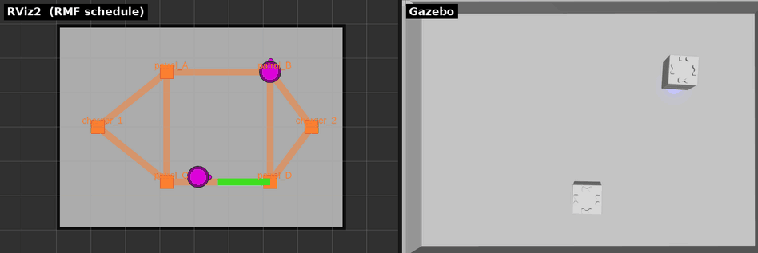

toioで学ぶ Open-RMF フリート処理
ROS 2中級者が、Open-RMFのフリート処理を手を動かしながら段階的に理解するためのチュートリアル。フリート処理とは、複数ロボットへのタスク割当・入札・交通調停・充電管理のことをいう。
Note
実行環境(launch・スクリプト・設定)はtoio_rmf_bringupにある。このリポジトリはそのチュートリアル部分(旧 docs/tutorial/)を独立させたもの。
「1台をA地点に動かす」から始めて、「2台が入札で仕事を奪い合い、狭いレーンで譲り合い、勝手に充電へ帰る」ところまでを1本の動線で登っていく。全ステップをtoio_gazeboシミュレーションで完結させる(第1部)。そのうえで、同じ内容を実機のtoioキューブでなぞり直す(第2部)。

本チュートリアルの舞台 ── 左がRViz2(RMFスケジュール可視化)、右がtoio_gazeboのA3マットと2台のキューブ。この上で入札・交通調停・充電・アクション(LED)を学ぶ。各章に実行中のスクリーンショットと、左RViz/右Gazeboを並べた動画を載せている。対象読者と前提
- 対象: ROS 2中級者。ノード / トピック / アクション / launch / TFは理解済み。Open-RMFは初見でよい。
- 前提環境: Ubuntu 24.04 + ROS 2 Jazzy。
~/dev_wsにtoio_rmf_bringupのワークスペースを構築済みであること(未構築なら章0から)。 - 実機は第2部だけ: 第1部(章0〜10)はシミュレーションのみで完結する。実機(toioキューブ2台とBluetooth、A4マット)が要るのは第2部(章11〜17)。
このチュートリアルの読み方
各章は次の型で進む。特に「観察する」を飛ばさないこと ── フリート処理は「動いた」だけでは中身が見えない。RMFの内部状態(入札・予約・タスク状態)をログやRVizで覗きながら進めるのが、このチュートリアルの主眼だ。
- 狙い ── この章で何ができるようになるか
- 動かす ── 投入するコマンド
- 観察する ── RMFの内部で何が起きているかをログ / RVizで見る(肝)
- 理解する ── そこで働いている概念
- 確認課題 ── 理解できたか自分で試す小課題
第1部は章0から順に通読する前提で書いてある(章1の用語表だけは、分からない語が出たときに戻る索引として使えばよい)。第2部は第1部の対応章と往復しながら読む。付録のTROUBLESHOOTINGとCAPTUREは通読する文書ではなく、詰まったとき・画像を撮り直すときにだけ開く。
全章共通のルール
- 端末A で環境全体を起動しっぱなしにし、端末B でタスクを投入する。各端末で最初に環境をsourceする:
source /opt/ros/jazzy/setup.bash source ~/dev_ws/install/setup.bash - 端末Aの起動コマンドは全章共通で、シミュレーションを明示的に有効化する:
ros2 launch toio_rmf_bringup toio_rmf.launch.py mat:=a3 run_sim:=true use_sim_time:=trueこのパッケージの既定は実機運用(
run_sim:=false/use_sim_time:=false)。シミュレーションでは両方をtrueにする必要がある。 - タスク投入コマンドには必ず末尾に
--use_sim_timeを付ける。例外はcancel_taskだけで、これは--use_sim_timeを受け付けない(章7で扱う)。この「--use_sim_timeの有無」以外は、実機でもコマンドはそのまま通る。つまりここで学んだタスク操作は、第2部でそのまま実機に持っていける。 - 特記なき限りA3マット(6頂点・全レーン双方向)を使う。2台同時運用に余裕があるため学習に向く。狭いA4マット(一方通行ループ)は章6で触れ、第2部(実機編)は全章A4で進める。
章立て
第1部 シミュレーション編 ── 「仕組み」を学ぶ
| # | 章 | 学ぶこと | 環境 |
|---|---|---|---|
| 0 | 環境構築とスモークテスト | ワークスペース構築、初回の完走確認 | sim |
| 1 | Open-RMFとは(概要と用語) | Open-RMFの目的とRMF固有の用語 | ── |
| 2 | RMFの全体像を掴む | RMFコア / フリートアダプタ / Nav2の三層 | sim |
| 3 | 1台を動かす(go_to_place) | タスク投入 → Nav2委譲、位置報告 | sim |
| 4 | 巡回と帰還(patrol) | navグラフ、周回、finishing_request | sim |
| 5 | 2台と入札(bidding) | 入札・落札・タスク割当 | sim |
| 6 | 交通調停(traffic) | 大域スケジュールと局所回避の二層 | sim |
| 7 | バッテリと自動充電 | ChargeBattery、閾値、キャンセル | sim |
| 8 | 搬送とワークセル(delivery) | dispenser / ingestorの分業 | sim |
| 9 | フリートアクション | perform_action、LED・効果音 | sim |
| 10 | 可視化とダッシュボード | RViz、rmf-web、マーカーの読み方 | sim |
第2部 実機編 ── 「手触り」を得る
第1部と同じ型で進むが、書くのはsimとの差分だけ。概念やコマンドの説明は第1部の対応章へ戻る。画像・動画は当面simのものを流用している。
| # | 章 | 対応する第1部 | 実機で新しく見えるもの | 環境 |
|---|---|---|---|---|
| 11 | 実機へ(sim→realの考え方と準備) | 章2 | 差分表、起動順序、最初のタスクの作法、A4の読み替え | 実機 |
| 12 | 実機で1台を動かす | 章3・4 | 位置報告の出どころ、一方通行ループ | 実機 |
| 13 | 実機で入札と交通調停 | 章5・6 | レーン数で決まる入札、mutexによる直列化 | 実機 |
| 14 | 実機でバッテリと自動充電 | 章7 | 実測残量でChargeBatteryが発火、Dock精密停止 | 実機 |
| 15 | 実機で搬送・アクション・可視化 | 章8・9・10 | 効果音が鳴る、実機のダッシュボード | 実機 |
| 16 | 実機特有のトラブルと復帰 | ── | BLE切断、マット境界、逆順起動からの復旧 | 実機 |
| 17 | 卒業課題とまとめ | ── | 実機検証チェックリスト | 実機 |
関連ドキュメント(このチュートリアルの土台)
- README ── 起動方法とlaunch引数の一覧
- docs/SETUP.md ── 環境構築の詳細と実機検証手順
- docs/TASKS.md ── 各タスクの内部シーケンス図解
- docs/DASHBOARD.md ── rmf-webダッシュボードの構築
このチュートリアルは「動線と観察」に徹し、コマンドの網羅的な引数一覧や内部シーケンス図は上記の各ドキュメントへ委ねる。詰まったら該当章から辿ること。
「コマンドは正しいのに引っかかる」症状はTROUBLESHOOTING.mdにまとめてある。cancel_task が戻らない、/fleet_states が空、2回目起動で登録されない、起動直後の最初のタスクが消える、など。
このチュートリアルで解決しない疑問や誤りの指摘は、章番号と端末Aのログを添えてこのリポジトリのIssuesへ。